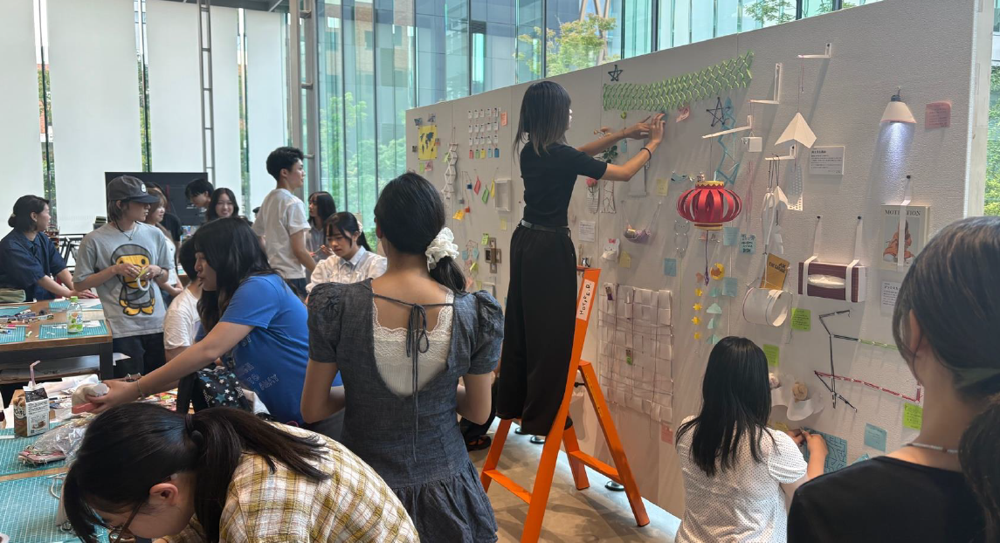
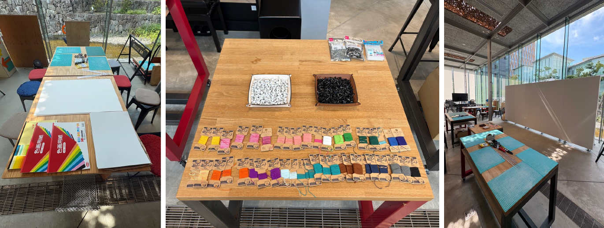
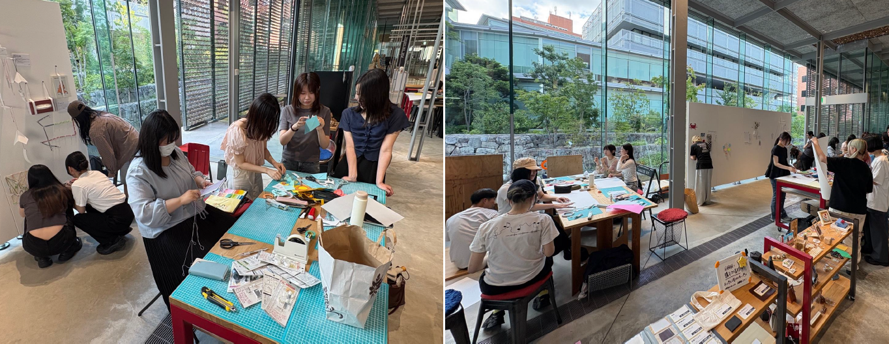
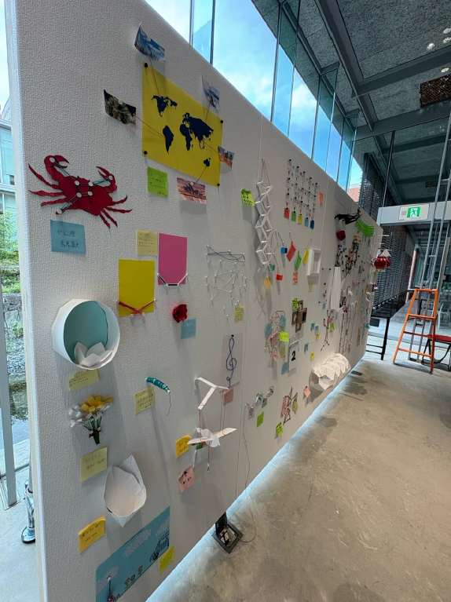

若井ホールディングス様とコラボ「ラクピン」を活用した壁面デザインワークショップを開催
近畿大学
2026.7.10

若井ホールディングス株式会社様のスマートフックシリーズ「ラクピン（点）」と「糸（線）」および「紙（面）」を活用し、新しい壁面の使い方や価値を提案するワークショップを実施しました。 ここで生まれたアイデアから、将来的な新商品開発へとつなげることを目的としています。
実施日時：2026年7月2日（木）、3日（金）
参加者：文芸学部文化デザイン学科
プロダクトデザインゼミ（柳橋 肇
教授）、インテリアデザインゼミ（奥平 桂子
講師）3,4年生（約40名）
協力：若井ホールディングス株式会社https://www.wakaisangyo.co.jp/hd/
株式会社栄紙業https://sakae-shigyo.jp/

近畿大学東大阪キャンパス、GARAGEにて実施、壁面の前にテーブルを並べ、材料を置き、作業スペースを確保しました。
「ラクピン」は白黒各250個（計500個）用意し、紙は780x550サイズの厚口紙が200枚、他色画用紙や厚紙なども用意。糸は若い産業のNeil it
!を多色40巻ほどで、他、ハサミ、カッター、カッターマット、のり、両面テープ、など基本的な道具も複数用意しました。

40人ほどの作品でほぼ壁面を埋めることができ、実用的なものよりも、装飾的で遊び感覚な作品が多かった印象です。
ご協力いただいた若井ホールディングス様には「新商品のネタやユーザーへの用途提案など幅広く活用できそう」と大変喜んでいただきました。

このようなワークショップを通じて大学から実用的な「デザイン」を発信し、若者のアイデアをカタチにできるような取り組みを、デザイン・クリエイティブ研究所として展開していきます。